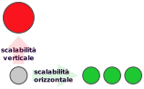

Iniziamo inquadrando il problema:
Con architettura di un sistema si intendono sia le funzionalità che hanno delle componenti software o hardware che le relazioni che si possono instaurare tra di loro.Una esempio di architettura semplice è quello dato da un programma desktop che esegue delle elaborazioni senza collegarsi a nessun altro sistema né chiedendo informazioni ad altri programmi presenti nella stessa macchina: questo è in molti casi quel che ci serve ma non sempre. Architetture di questo genere vengono dette monolitiche e prevedono che il sistema venga sviluppato come un unico programma: un sistema di questo tipo ha alcuni vantaggi come la facilità iniziale di sviluppo, la possibilità di ottimizzazione e la semplicità di fare test. Ci sono però anche degli svantaggi: quando crescono sono più difficili da mantenere, è difficile cambiare le tecnologie utilizzate e spesso non riescono a mantenere buone prestazione all'aumentare del carico di lavoro.
Una misura che può essere utile nel valutare la bontà di un sistema facendo riferimento alle sue prestazioni è la scalabilità:
La scalabilità di un sistema è la capacità che ha il sistema stesso di mantenere le prestazioni stabili anche a fronte di un aumento di carico di lavoro. In particolare con l'espressione scalabilità verticale ci si rifertisce alla possibilità di migliorare le prestazioni del sistema migliorando il singolo nodo di elaborazione (più RAM, processore più veloce...) e questo di solito non richiede modifiche del sistema ma ha dei limiti (non posso mettere un processore cento volte più veloce o cento volte più RAM). Con scalabilità orizzontale si intende invece la possibilità di migliorare le prestazioni aggiungendo più nodi di elaborazione, in questo caso il sistema deve essere stato progettato dall'inizio per permettere di fare questo lavoro.
Attenzione ai termini "migliorare" e "mantenere". Poniamo di avere un sistema web che riceve circa 20 richieste al secondo e per soddisfare una richiesta impiega 100 millesimi di secondo. Ad un certo punto le richieste diventano 40 al secondo e per via dell'aumentato lavoro il tempo di servizio diventa di 200 ms. Se questo sistema "scala bene" devo poterlo "migliorare" in modo da "mantenere" il livello originale di servizio: devo cioè migliorare il sistema in modo che pur avendo 40 richieste al secondo io possa servire ciascuna richiesta in 100ms.
Sistemi distribuiti
Spesso i programmi hanno bisogno di reperire informazioni che non possiedono o di svolgere operazioni complesse che non sono in grado di portare avanti da soli. In questi contesti (sempre più comuni) una architettura che viene in aiuto è quella detta distribuita, esistono diverse definizioni di sistema distribuito più o meno equivalenti, noi useremo quella di van Steen e Tanenbaum:
Un sistema distribuito è un insieme di elementi di elaborazione autonomi che appare ai suoi utenti come un unico sistema coerente.Nella definizione rientrano tantissime architetture attuali. In "elementi di elaborazione" possiamo includere sia componenti hardware che software; anche l'uso di una applicazione su un dispositivo mobile che accede a dati presenti su un sistema remoto ovviamente rientra nella definizione (es: Spotify).
Come in tutti i sistemi tecnologici la loro adozione è imposta dal fatto che i vantaggi superino gli svantaggi, nell'analizzare la situzione iniziamo però da questi ultimi.
Svantaggi dei sistemi distribuiti
Una definizione alternativa per i sistemi distribuiti può aiutare ad inquadrare la situazione:
"Un sistema distribuito è uno in cui il guasto di un computer che non sapevi nemmeno esistere può rendere il tuo computer inutilizzabile" Leslie Lampor
- Complessità: un sistema distribuito è spesso più complesso da progettare e realizzare rispetto ad un sistema centralizzato, la comunicazione tra due computer ad esempio introduce complessità nella realizzazione del software.
- Dipendenza dalla rete: sia le prestazioni che l'affidabilità del sistema dipendono dall'infrastruttura di comunicazione su cui non è detto che si possa intervenire e che spesso introduce dei costi economici.
- Debugging e testing più difficili: individuare la causa di un problema è più complesso perché il bug potrebbe dipendere dall'interazione tra i componenti.
- Difficoltà di sincronizzazione: in caso i dati siano presenti in più elementi di elaborazione mantenerli sincronizzati non è ovvio.
- Problemi di sicurezza: avere più elementi di eleborazione semplicemente significa ampliare le superfici di attacco.
Vantaggi dei sistemi distribuiti
Come dicevamo poco sopra visto che li usiamo c'è da supporre che i vantaggi superino gli svantaggi, quindi vediamo un sistema distribuito ben progettato quali vantaggi porta:
- Flessibilità e modularità: una architettura modulare permette di mantenere e aggiornare il sistema più facilmente, posso sostituire un componente alla volta e non tutto il sistema nel suo insieme.
- Scalabilità: posso migliorare le prestazioni del stema aggiungendo nodi di elaborazione per adattarmi all'aumento di richieste di prestazioni, questo potrebbe consentirmi anche di utilizzare macchine meno costose.
- Affidabilità: se il sistema è organizzato in modo che i dati siano presenti in più nodi il fallimento di uno di questi non provoca un blocco, altri nodi interverranno per svolgere il suo lavoro.
Altro grande beneficio per l'utente è la trasparenza di queste architetture:
La trasparenza indica la capacità di un sistema o componente di funzionare in modo nascosto o invisibile all'utente o ad altri componenti.Nel caso specifico l'utente non tiene conto affatto dell'architettura complessa del sistema distribuito ma interagisce con un dispositivo locale come se tutto accadesse lì.
Sistemi ben strutturati offrono dei livelli di trasparenza anche agli sviluppatori ad esempio permettendogli di trattare un archivio come se fosse unico e centralizzato sebbene sia distribuito in diversi computer ospitati in diverse server farm.
Tier
Anche nella progettazione di architetture distribuite si utilizza spesso una struttura a livelli che in questo contesto si chiamano usualmente tier. Come nel caso dei livelli nelle strutture di rete o dei sistemi operativi anche qui ad un tier vengono affidati compiti specifici come ad esempio l'interfaccia con l'utente o la memorizzazione dei dati. A seconda della singola soluzione si potranno avere uno o più livelli. Vediamo alcuni esempi di architetture a più tier.
2 tier. Possiamo avere una architettura a due tier quando ad esempio una applicazione desktop lavora connettendosi con un server db (presente sulla stessa macchina o in una remota).
3 tier.  Una architettura classica multi tier divide un sistema complesso in tre livelli:
il data tier è quello che si occupa della gestione dei dati (es: il SGBD di un database relazionale),
l'application tier è quello che contiene la logica di elaborazione
(l'applicazione lato server) e il presentation tier si occupa dell'interazione con
l'utente (ad esempio delle pagine HTML-JS o una applicazione mobile). In sistemi di questo genere ci si riferisce
al livello presentation come al frontend e agli altri due come backend.
Una architettura classica multi tier divide un sistema complesso in tre livelli:
il data tier è quello che si occupa della gestione dei dati (es: il SGBD di un database relazionale),
l'application tier è quello che contiene la logica di elaborazione
(l'applicazione lato server) e il presentation tier si occupa dell'interazione con
l'utente (ad esempio delle pagine HTML-JS o una applicazione mobile). In sistemi di questo genere ci si riferisce
al livello presentation come al frontend e agli altri due come backend.
4 tier.Architettura più complesse potrebbero avere ulteriori livelli ad esempio inserendo un sistema di cache tra l'applicazione e il database.
Stack tecnologici
Nello sviluppo e nel funzionamento molti strumenti entrano in gioco: ci si riferisce al loro insieme come allo "stack tecnologico", di solito abbreviato soltanto in stack.
Uno stack tecnologico è l'insieme di linguaggi di programmazione, framework, database, sistemi di gestione, librerie e strumenti scelti per lo sviluppo, la pubblicazione e l’esecuzione di un’applicazione.Nella definizione di stack tecnologico è presente un termine che si usa molto spesso in questo contesto: framework.
Un framework è un insieme strutturato di strumenti, librerie, regole e componenti già pronti che forniscono l’ossatura di base per sviluppare applicazioni in uno specifico linguaggio di programmazione.Per vederla da un punto di vista pratico: un framework semplifica lo sviluppo di applicazioni a patto che si accettino le modalità di sviluppo e funzionamento da lui previste.
Un esempio di stack per un progetto potrebbe essere:
- Sitema Operativo (es: Linux, Windows Server, macOS)
- Runtime (Java Virtual Machine, .NET CLR, Node.js)
- Linguaggi e framework( es: il linguaggio Java o il framework Spring Boot)
- Database (es: PostgreSQL, Oracle Database)
- Tool di supporto( es: git, maven)
- Infrastruttura (es: AWS, docker)
Dall'esempio dovrebbe essere evidente che esistono una infinità di combinazioni.
Componenti tecnologiche
Una volta definita l'architettura di un sistema un ulteriore passo da fare è la scelta delle singole tecnologie da utilizzare per la sua costruzione. Vediamone alcune con degli esempi di tecnologie utilizzabili:
- Frontend
- Anche in funzione di come vogliamo rendere fruibile il sistema che realizziamo potremmo decidere di scriverlo utilizzando HTML+CSS+JS oppure magari Flutter o entrambe.
- Backend-applicazioni
- Con quale linguaggio o framework svilupperò l'applicazione lato server? Spring Boot con Java, PHP, Node.js sono soltanto alcune possibilità.
- Backend-database
- Voglio usare un database relazionale come Oracle, MySQL o PostgreSQL? oppure il miei dati sono archiviati in modalità diverse e quindi potrei voler usare MongoDB?
In alcuni casi è possibile scegliere liberamente la tecnologia da utilizzare il che presuppone di avere una conoscenza almeno indicativa delle alternative ma in altri le scelte sono almeno in parte predeterminate:
- sul server a mia disposizione quali linguaggi posso usare?
- i dati sono organizzati (forse meglio organizzabili) in maniera relazionale o meno?
- quali sono i tempi di lavorazione?
- quanto è complesso il sistema?